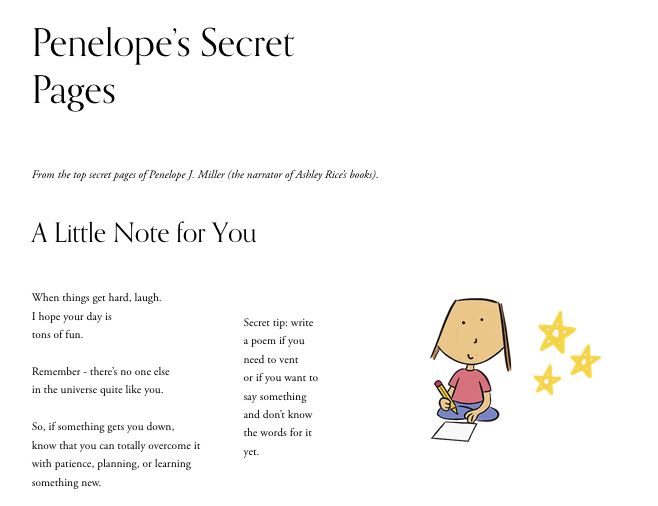

The Challenge
Tween readers and Pinterest users were landing from pins on generic book pages with no emotional hook and bouncing fast.
What I Did
- Wrote original poems, quotes, birthday messages, and “letters from Penelope.”
- Built a hidden, diary-style hub of discoverable poetry pages.
- Crafted warm microcopy and smart internal navigation to encourage multi-page exploration.
- Optimized page titles, meta descriptions, and rich pins for Pinterest + Google traffic.
Outcome
A living, browsable world that turns Pinterest visitors into delighted readers who explore, pin, and feel personally connected to Penelope before ever seeing a buy button.
Live experience: ashleyrice.net/penelopes-pages
Visual Example

Click image to visit live site
Explore Individual Pages
These pages function as the "hub" I built for the user journey: